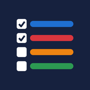

塾の宿題と毎日のことを、曜日ごとに管理するアプリです。
| iPhone | Safariで開き、共有ボタン →「ホーム画面に追加」。 |
|---|---|
| Android | Chromeで開き、右上の「︙」→「ホーム画面に追加」または「アプリをインストール」。 |
| 曜日を決める | 選んだ曜日の「今日」に出ます。 |
|---|---|
| 期限を決める | 「○曜日までに」終わらせる課題です。次の期限まで毎日「期限まで」に出ます。 |
| 期限切れ | 前の日までに終わらなかった課題です（生活は除く）。一番上に出ます。 |
|---|---|
| 今日 | 今日する課題です。四角を押すと完了になります。 |
| 期限まで | 期限を決めた課題です。 |
| 完了 | 終わった課題です。「戻す」で取り消せます。 |
| しない | 「⋯」→「この日はしない」「今週はしない」を選んだ課題です。「戻す」で元に戻せます。 |
いつもと違う課題がある日は ＋ 今日の課題を追加 で追加します。その日だけの課題なので、ほかの日には影響しません。
今週の残りと、1週間の記録の表が見られます。■が完了、点線の□がやり残し、「−」はしないことにした日です。
記録はスマホの中だけに保存されます。設定 →「バックアップを保存」で、ときどき保存してください。機種変更のときは、新しいスマホで「バックアップから復元」を選びます。